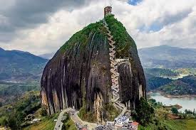

GUATAPE
Guatapé es un municipio turístico de los Andes al noroeste de Colombia y al este de Medellín. Es famoso por sus casas decoradas con bajorrelieves de colores. Está situado cerca del embalse artificial de Peñol-Guatapé, un centro de deportes acuáticos muy concurrido. La Piedra del Peñol es una roca de granito gigante que se encuentra al sudoeste de la localidad y que dispone de una larga escalera hasta su cima, en la que se puede disfrutar de una vista panorámica de la zona. La piedra de El Marial es una roca gigante sobresaliente que se encuentra cerca.
